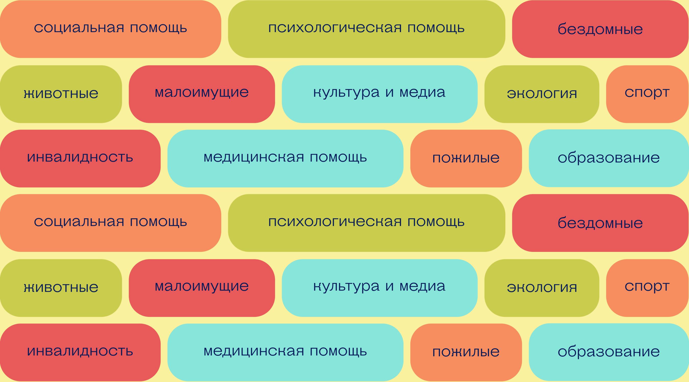
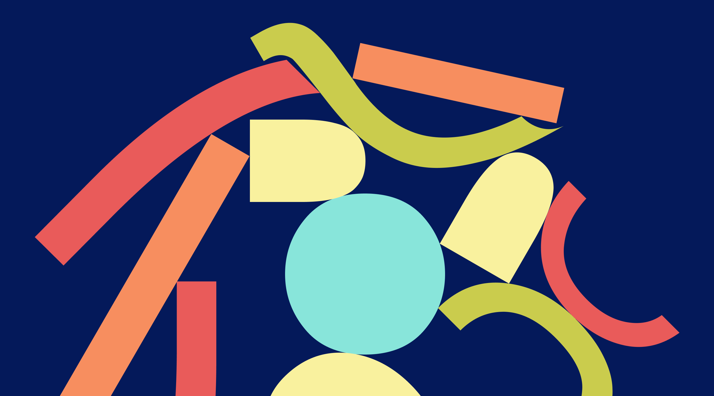
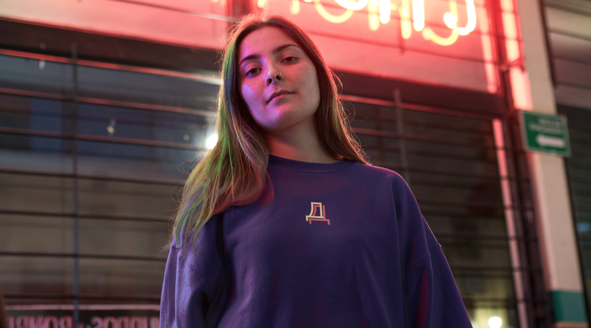
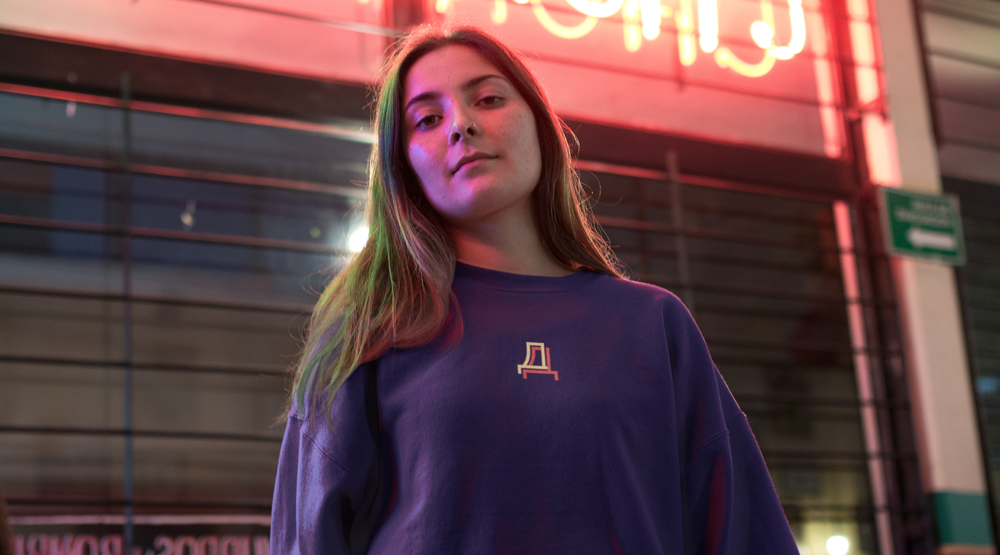
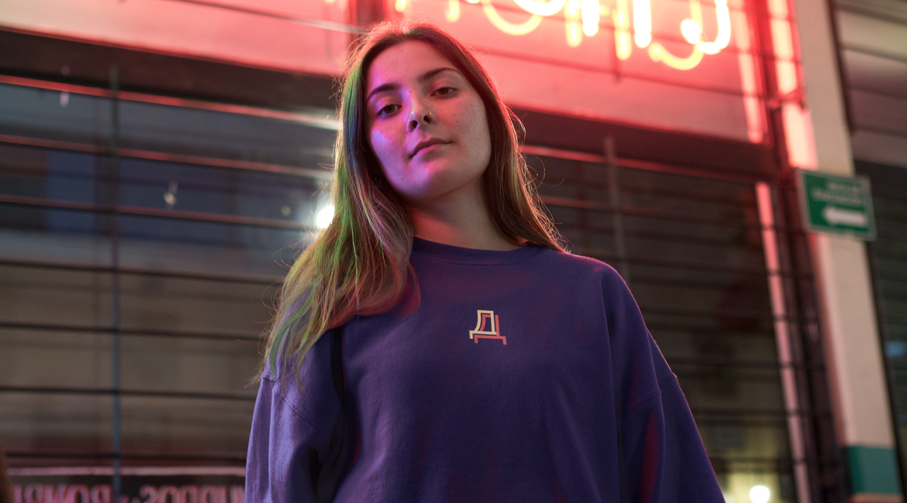

As a result of the research, we learned that filters are needed (coworking features are important to many), in addition to subscriptions, one—time visits are needed — a lot of people go a couple of times a month, and also that the rating is important for visitors.


 

